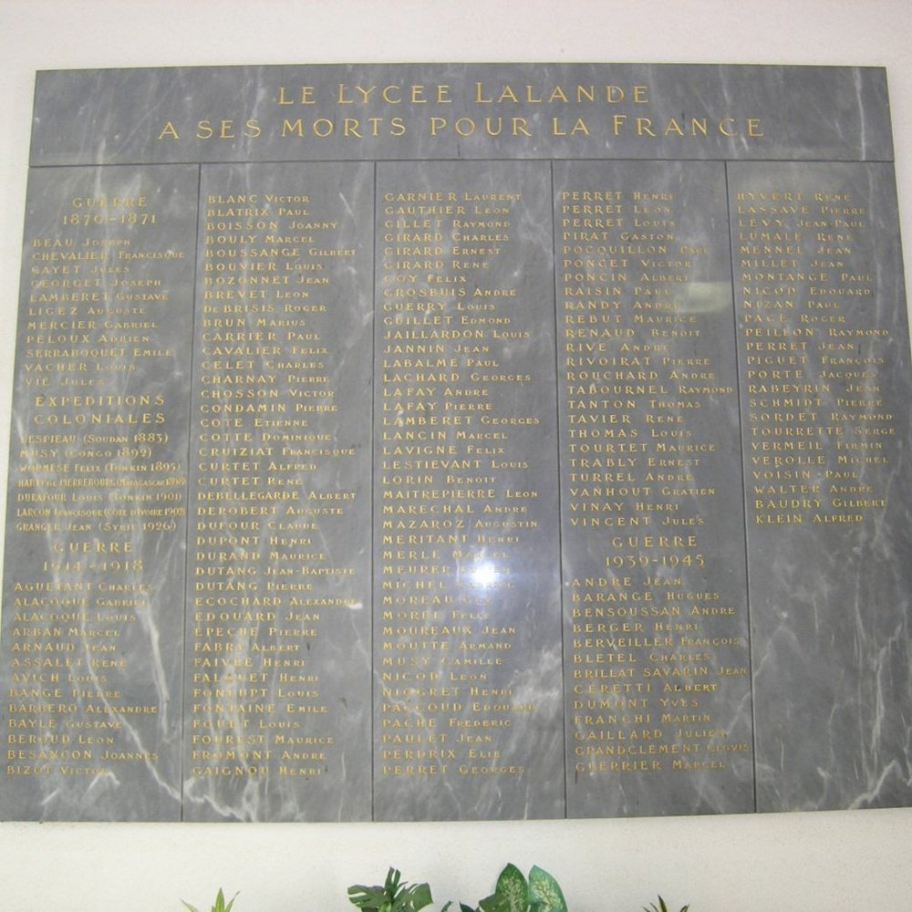

Département 03
Allier
8 biographies liées au département.

Alfred Klejn

Enfants Ast

Enfants Fakler

Enfants Partouche (2)

Enfants Partouche (Zerbib)

Enfants Roth

Enfants Skorka (S)
![Jeanine Sontag [alias Marie-Louise Beroujon] (F)](images/enfant-sontag.jpg)
Histoire des jeunes victimes juives de la Shoah
Département 03
8 biographies liées au département.
